Inhalt Index DeskTop Bronstein

 Arithmetik Ungleichungen Lösung von Ungleichungen 1. und 2. Grades
Arithmetik Ungleichungen Lösung von Ungleichungen 1. und 2. Grades


| ax2 +bx + c > 0 | (1.132a) |
oder
| 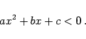 | (1.132b) |
Die Ungleichung wird durch a dividiert, wobei sich das Vorzeichen im Falle a < 0 ändert, so daß sie auf die Form
| x2 +px + q < 0 | (1.132c) |
oder
| x2 + px + q > 0 | (1.132d) |
gebracht wird. Durch quadratische Ergänzung folgt
| 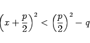 | (1.132e) |
oder
| 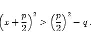 | (1.132f) |
Bezeichnet man nun 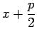 mit z und 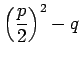 mit m, dann ergibt sich die Ungleichung
| z2 < m | (1.132g) |
oder
| 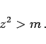 | (1.132h) |
Nachdem diese gelöst ist, kann x bestimmt werden.
| Beispiel A |
|
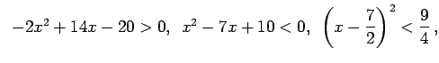 |
| Beispiel B |
|
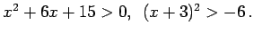 Die Ungleichung ist identisch erfüllt. |
| Beispiel C |
|
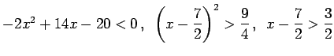 und 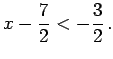 Die Lösungsbereiche sind x > 5 und 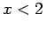. |